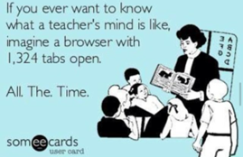

![I discovered this website about 5 years ago when it was still a free site. I was very impressed with their video lessons. I was using them to help with my own pedagogy.
They have educational programs for students and teachers alike, and you can still get a shorter version of their video lessons to play in classroom for free.
I use them in a similsr mammer as I do the BrinPOP videos. The difference is they offer a wider range of topics and their videos reach a higher grade level than BrainPOP. This has been very helpful now that I am teaching middle school.](contribute_files/image005.png)
![I have been a big fan of BrainPOP for years. I used it with my own children long before becoming a teacher. In classrooms, on mobile devices, and at home, BrainPOP engages students through animated movies, learning games, interactive quizzes, primary source activities, concept mapping, and more.
In class, I play the videos and the kids love the relationship between Moby the Robot and Tim the narrator.
I use the quizzes as a review of the material taught online and in-person and as a means of assessing mastery.](contribute_files/image009.png)